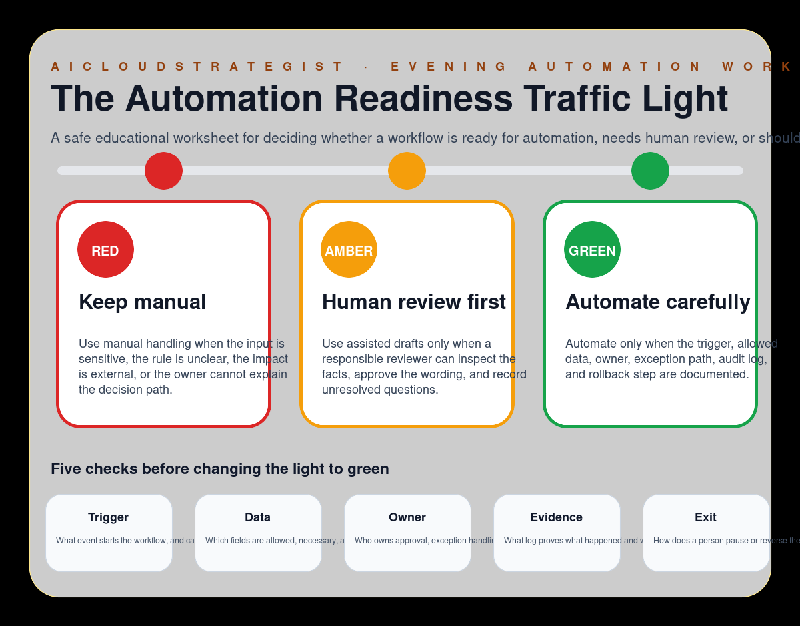

Evening publication · automation readiness
The Automation Readiness Traffic Light
A safe educational worksheet for deciding whether a workflow is ready for automation, needs human review, or should stay manual until facts are clearer.

Three readiness lights
- RED — Keep manual: Use manual handling when the input is sensitive, the rule is unclear, the impact is external, or the owner cannot explain the decision path.
- AMBER — Human review first: Use assisted drafts only when a responsible reviewer can inspect the facts, approve the wording, and record unresolved questions.
- GREEN — Automate carefully: Automate only when the trigger, allowed data, owner, exception path, audit log, and rollback step are documented.
Five checks before green
- Trigger: What event starts the workflow, and can it be detected reliably?
- Data: Which fields are allowed, necessary, and safe to process?
- Owner: Who owns approval, exception handling, and rollback?
- Evidence: What log proves what happened and why?
- Exit: How does a person pause or reverse the automation?
How to use this worksheet
Use the traffic light when a team wants to automate a repeatable workflow but has not yet agreed on evidence, ownership, exceptions, and rollback. The worksheet keeps automation decisions visible and reversible before a workflow affects customers, staff, or public messages.
Truth boundary
Educational workflow only — not legal, compliance, medical, financial, security, certification, savings, ranking, revenue, booking, or guaranteed-performance advice.